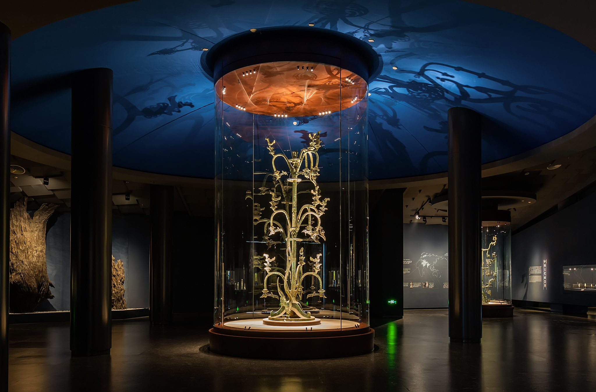
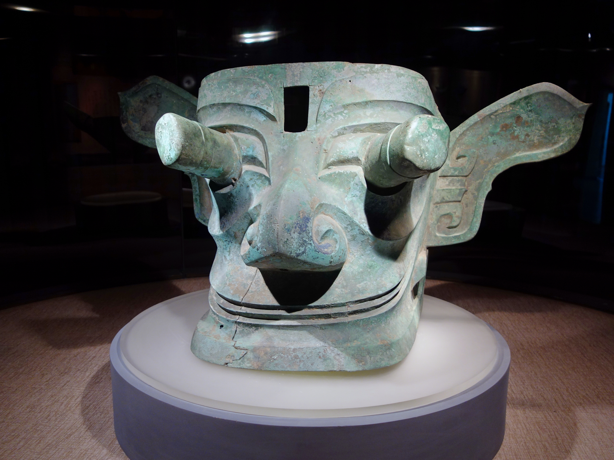
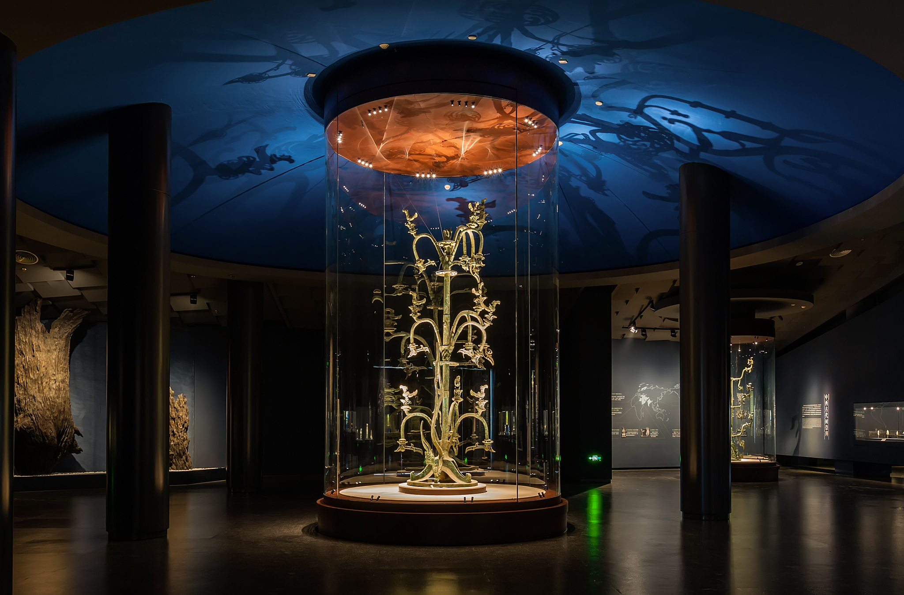
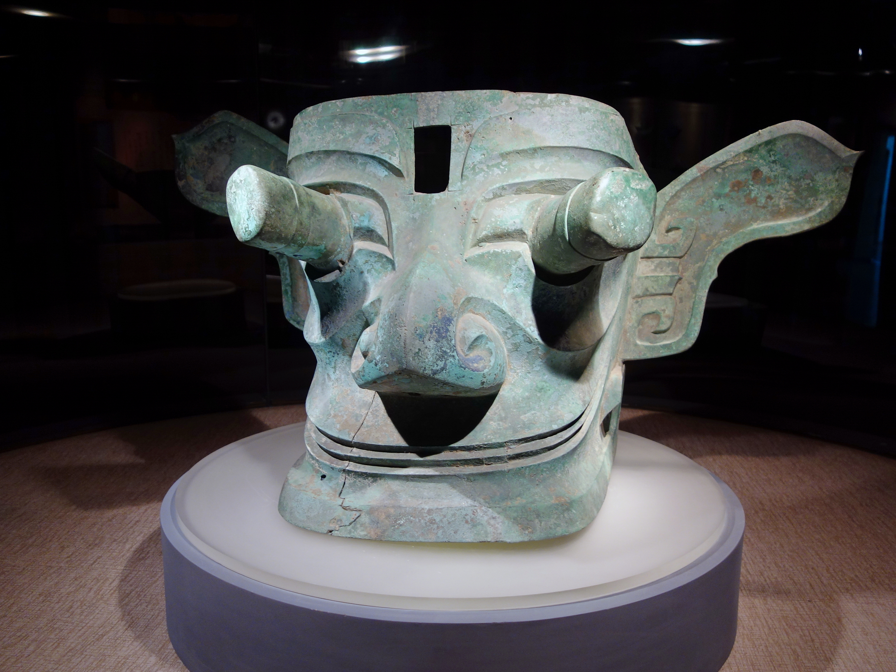

Guest
0
0
0
SANXINGDUI
The Lost Civilization
作业与积分说明 (Instructions):
- 1. 词汇学习: 点击卡片学习。停留30秒、点击发音或查看翻译均可获得积分。
- 2. 词汇测试: 选择数量(30%-100%)，获得相应基础分。答对+1分，答错-1分。
- 3. 视频理解: 完成Part 1（概括）和 Part 2（细节10题）。
- 智能存档: 随时退出，点击“恢复进度”即可回到断点。
核心词汇表 (Vocabulary)
点击卡片查看详情。点击 将单词加入你的 PDF 生词表。
词汇小测验 (Vocabulary Quiz)
请选择测试数量 (基础分):
背景介绍 (Introduction)

 



Sanxingdui is a famous ancient site in Sichuan, China. Farmers found it in 1929. In the 1980s, archaeologists dug up amazing treasures like big bronze masks and gold. These masks have huge eyes and look very strange. This culture started around 1200 BCE. Then, the people suddenly left. Maybe there was an earthquake or a flood. It is still a big mystery today.
Part 1: General Understanding
请先阅读问题 (Pre-reading Questions)
1. Based on the video, what is the primary subject?
A. Agricultural techniques
B. Strategic warfare
C. The enigma of Sanxingdui
D. Bronze casting evolution
2. Where is the Sanxingdui site geographically situated?
A. Yellow River Valley
B. Heart of Sichuan
C. Yangtze Delta
D. Northern Plains
Part 2: Detail Comprehension
注意： 无字幕盲听 (No Subtitles)。包含10道题目。
Questions (10 Total)
1. Who stumbled upon the first artifacts in 1929? (Easy)
2. What is the most striking feature of the bronze masks? (Easy)
3. Was the Sanxingdui culture identical to the Shang Dynasty? (Easy)
4. Were the artifacts deliberately broken before being buried? (Easy)
5. Timeline: Flourished around ___ / Vanished around ___ BCE. (Medium)
/
/
6. What is one likely reason suggested for their abandonment of the site? (Medium)
7. The large bronze trees discovered at the site likely symbolize: (Medium)
8. The "unique worldview" of Sanxingdui implies: (Hard)
9. (High Level) The presence of elephant tusks (ivory) suggests that the people:
10. Draw Lines to Match Events: (Hard)
A. 1929
B. 1980s
C. 1200 BCE
D. 1100 BCE
Site Abandoned
Farmer Found Jade
Civilization Flourished
Massive Pits Found
Mission Report
0
UP Stars0
Vocab0
Video0
Total| Question (完整题干) | Your Answer | Correct | Points |
|---|